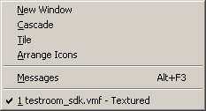

The Window Menu
This is a standard Windows menu. The only thing unusual is the Messages option, which will bring up Hammer's Messages window when an error occurs. The message window will report any problems Hammer had with loading its game configuration files. Typically, you will only see a message there if you have modified your .FGD file in some way and made a mistake.
The New Window function is useful for creating new windows when you're using independent window configurations.
© 2004 Valve Corporation. All rights reserved. Valve, the Valve logo, Half-Life, the Half-Life logo, the Lambda logo, Steam, the Steam logo, Team Fortress, the Team Fortress logo, Opposing Force, Day of Defeat, the Day of Defeat logo, Counter-Strike, the Counter-Strike logo, Source, the Source logo, Hammer and Counter-Strike: Condition Zero are trademarks and/or registered trademarks of Valve Corporation. Microsoft and Visual Studio are trademarks and/or registered trademarks of Microsoft Corporation. All other trademarks are property of their respective owners.